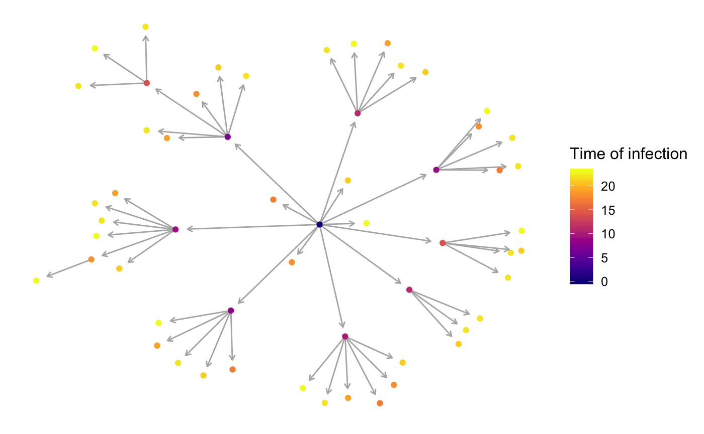

vignettes/single-host-none.Rmd
single-host-none.RmdNosoi can accommodate a wide range of epidemiological transmission scenarios, and doing so requires providing the proper parameter values. This tutorial aims to illustrate how to set up a Nosoi simulation for a “simple” case: a pathogen being transmitted among a single-host population without structure.
The wrapper function nosoiSim takes all the arguments that will be passed down to the core function, in the case of this tutorial: singleNone (for “single host, no structure”). We thus start by providing the options type="single" and structure=FALSE to set up the analysis:
SimulationA <- nosoiSim(type="single", structure=FALSE, ...)This simulation (singleNone) type takes several arguments or options to be able to run, namely:
length.simmax.infectedinit.individualstimeContact with param.timeContact (optional)pTrans with param.pTrans
pExit with param.pExit (optional)prefix.hostlength.sim, max.infected and init.individuals are general parameters that define the simulation. length.sim is the maximum number of time units (e.g. days, months, years, or another time unit of choice) during which the simulation will be run, whereas max.infected is the maximum number of individuals that can be infected during the simulation. Both values need to be provided, and the simulation will thus run until either the time limit or the maximum number of infected individuals is reached. init.individuals defines the number of individuals (starting at 1, should be an integer) that will start a transmission chain (you will have as many transmission chains as initial individuals that “seed” the epidemic process).
Here, we will run a simulation starting with 1 individual, for a maximum of 1.000 infected individuals and a maximum time of 300 days.
SimulationA <- nosoiSim(type="single", structure=FALSE,
length.sim=300, max.infected=1000, init.individuals=1, ...)timeContact represents the number of potentially infectious contacts an infected hosts can encounter per unit of time. At each time point, a number of contacts will be determined for each active host in the simulation. The number of contacts (i.e. the output of your function) has to be an integer and can be set to zero. As this number might vary, it has to be expressed as a function of t (uniquely), but it can take various forms:
time_contact_fct = function(t){return(2)} #to get a constant number of contacts for each hosts, here 2.
time_contact_fct = function(t){sample(c(0,1,2,3),1,replace=TRUE,prob=c(0.4,0.3,0.2,0.1))} #to get a varying number of contacts for each hosts.
time_contact_fct = function(t){round(rnorm(1, 3, 1), 0)} #another example of varying number of contacts for each hosts.This thus gives us the following structure for Nosoi’s wrapper function:
SimulationA <- nosoiSim(type="single", structure=FALSE,
length.sim=300, max.infected=1000, init.individuals=1,
timeContact=time_contact_fct, ...)The pTrans function is the heart of the transmission process and represents the probability of transmission over time (when a contact occurs). This function (uniquely) returns the probability (i.e. a value between 0 and 1) dependent on the time (t) since the host’s infection. It is intended to work with a set of parameters (at least 1) defined by param.pTrans, that will characterize the dynamics of the transmission probability over time, as well as introducing some stochasticity. Since each host is different (because of slightly different biotic and abiotic factors), you can expect each host to show differences in the dynamics of infection, and hence probability of transmission over time. The parameters defined in param.pTrans are hence also functions that will sample parameter values (param.pTrans is a list of functions).
As an example, let’s consider the following function for pTrans, in the form of a threshold function:
proba <- function(t,p_max,t_incub){
if(t < t_incub){p=0}
if(t >= t_incub){p=p_max}
return(p)
}This function returns a transmission probability p given the time since infection t and two parameters, p_max, the maximum transmission probability and t_incub, the length of the incubation period (the threshold). If t is bigger than t_incub, then the transmission probability is p_max; if not, it is equal to 0.
p_max and t_incub need to be specified. If we fix the values, for example to 0.8 and 5 units of time respectively, we assume that each host will react the same to the infection, as if they were perfect clones. To more accurately match reality, Nosoi forces you to sample the values of each parameters from a function, such as:
p_max_fct <- function(x){rbeta(x,shape1 = 5,shape2=2)}
t_incub_fct <- function(x){rnorm(x,mean = 5,sd=1)}Here, p_max will be sampled from a beta distribution, with shape parameters 5 and 2, and t_incub will be sampled from a Gaussian distribution, with mean 5 and standard deviation 1. x, as seen before for timeContact will be the number of draws to perform. If you want to fix the value of one or all parameters, you can use a sampling function that will always give you the same value, such as:
t_incub_fct <- function(x){rep(5,x)} #constant parameter value.In any case, the functions for pTrans parameters have to be wrapped into a list, called param.pTrans. The name of each function in the list has to have the same name as the parameter it is sampling for pTrans. Here, it will look like:
list(p_max=p_max_fct, t_incub=t_incub_fct)At this point, the nosoiSim function should look like:
pExit is the last required fundamental parameter and provides a daily probability for a host to leave the simulation (either cured, died, etc.). To accommodate several scenarios, it can be a constant, time dependent or even individually parameterized, to include some stochasticity at the individual host level. In the latter case, you need to specify param.pExit as a list of functions. Here are some possible functions for pExit:
p_Exit_fct <- function(t){return(0.08)} #as a constant
p_Exit_fct <- function(t){plogis(t,20,2)} #as a time dependent function
p_Exit_fct <- function(t,pExit.param1){plogis(t,pExit.param1,2)} #as an individually parameterized function
p_exit_param1 <- function(x){rnorm(x,mean = 10,sd=2)} #sampling one parameter for each infected individualFor a constant or time-dependent function, with no individual parameter, param.pExit is NA. In the case of an individually parameterized pExit, the functions for the parameters have to be wrapped into a list, called param.pExit (similar to param.pTrans above). The name of each function in the list has to have the same name as the parameter it is sampling for pExit. Here it will look like:
param.pExit=NA
param.pExit=list(pExit.param1=p_exit_param1)At this point, the nosoiSim function should look like:
prefix.host allows you to define the first character(s) for the hosts’ unique ID. It will be followed by a hyphen and a unique number. By default, prefix.host is “H” for “Host”.
progress.bar allows you to get some information printed on the screen about the simulation while running. It will print something every print.step. By default, progress.bar is activated, with a print.step = 10 (that you can change), but you may want to deactivate it by providing progress.bar == FALSE.
Once nosoiSim is set up, you can run the simulation (here the “seed” ensures that you will get the same results as in this tutorial).
library(nosoi)
#> Loading required package: data.table
#timeContact
time_contact_fct = function(t){abs(round(rnorm(1, 0.5, 1), 0))}
#pTrans
pTrans_fct <- function(t,p_max,t_incub){
if(t <= t_incub){p=0}
if(t >= t_incub){p=p_max}
return(p)
}
t_incub_fct <- function(x){rnorm(x,mean = 7,sd=1)}
p_max_fct <- function(x){rbeta(x,shape1 = 5,shape2=2)}
#pExit
p_Exit_fct <- function(t){return(0.08)}
set.seed(805)
SimulationA <- nosoiSim(type="single", structure=FALSE,
length.sim=100, max.infected=100, init.individuals=1,
timeContact=time_contact_fct,
param.timeContact=NA,
pTrans = pTrans_fct,
param.pTrans = list(p_max=p_max_fct,t_incub=t_incub_fct),
pExit = p_Exit_fct,
param.pExit = NA,
prefix.host="H",
progress.bar=FALSE)
#> Starting the simulation
#> Initializing ... running ...
#> done.
#> The simulation has run for 24 units of time and a total of 57 hosts have been infected.The simulation can stop before 100% of the progress bar is reached if the maximum number of infected hosts has been reached. Once the simulation is finished, it reports the number of time units for which the simulation has run (52), and the maximum number of infected hosts (107). Note that the simulation has stopped here before reaching length.sim as it has crossed the max.infected threshold set at 100.
Nosoi gives as its output a list contaning a data.table (a more efficient version of a data.frame) called table.hosts with the following structure:
head(SimulationA$table.hosts)
#> hosts.ID inf.by inf.time out.time active p_max t_incub
#> 1: H-1 NA-1 0 24 0 0.6820110 5.867392
#> 2: H-10 H-2 14 24 0 0.9552022 7.809769
#> 3: H-11 H-1 17 24 0 0.8676932 6.771355
#> 4: H-12 H-3 17 24 0 0.6714091 5.864994
#> 5: H-13 H-5 17 24 0 0.8659929 8.313040
#> 6: H-14 H-6 17 24 0 0.6241947 8.028895Each individual host that was or is infected during the course of the simulation is a line in the data.table. hosts.ID is the unique identifier of the host, while inf.by indicate which host infected it. As you can see, host H-1 has been infected by NA; H-1 is the individual that started the transmission chain. inf.time is the time (in simulation units of time) when the host has been infected, and out.time is the time (in simulation units of time) when it left the simulation. Here in the top 6 lines, no host has left the simulation (it ran only for 13 units of time). active indicates if the host is still active in the simulation. p_max and t_incub are the individually sampled parameters for pTrans.
The transmission chain can be visualized using some of the packages dealing with networks in R. I typically use igraph with ggnetwork, but this is really up to you. Keep in mind that the more nodes (i.e. infected hosts) you have, the more messy (or difficult) the visualisation will be.
library(ggplot2)
library(viridis)
library(igraph)
library(ggnetwork)
# To show the graph, we need to invert column 1 and 2, and discard the first line (i.e. the first host,
# because it shows "NA" as infecting host). We then provide *Nosoi* output as elements for the vertices (nodes).
graph.simA <- graph.data.frame(SimulationA$table.hosts[-1,c(2,1)],directed=T,vertices = SimulationA$table.hosts)
graph.simA.network = ggnetwork(graph.simA, layout = "fruchtermanreingold", cell.jitter = 0.75) #using ggnetwork to provide the layout
#plotting the network
ggplot(graph.simA.network, aes(x = x, y = y, xend = xend, yend = yend)) +
geom_edges(color = "grey70",arrow = arrow(length = unit(0.3, "lines"), type = "open")) +
geom_nodes(aes(color=inf.time)) + scale_color_viridis(name="Time of infection",option = "plasma") +
theme_blank()